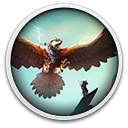

 The Falconeer
Details
 |
|
| Playtime | Not Played |
| Last Activity | Never |
| Added | 27/09/2024 13:58:02 |
| Modified | 17/05/2025 23:41:32 |
| Completion Status | Not Played |
| Library | Gog |
| Source | GOG |
| Platform | PC (Windows) |
| Release Date | 10/11/2020 |
| Community Score | 52 |
| Critic Score | 72 |
| User Score | |
| Genre | Adventure Indie Role-playing (RPG) Shooter Simulator |
| Developer | Tomas Sala |
| Publisher | Wired Productions |
| Feature | Single Player |
| Links | Steam Official YouTube Discord GOG Epic Wikipedia Twitch |
| Tag | Action Amazon Luna Combat Exploration Fantasy Flight Military Open World Pirates Science Third Person Underground War |
Description
FROM THE CLOUDS THEY DIVE, THE SCREAMS OF BATTLE IN THEIR LUNGS…
Generations of poisonous decisions and treason swirl in the deep, as factions collide.Become the Falconeer and soar through the skies aboard a devastatingly powerful Warbird. Uncover secrets lost to the sea as you join or oppose different factions and clans scattered throughout The Great Ursee. Take advantage of multiple Falconeer classes with individual stats, weapons and warbirds that can be upgraded through winning battles, completing quests, discovering secrets, or applying Mutagens or Chants. Use ocean thermals and energy to dive, dodge, barrel-roll, and twist to gain an advantage.
The Falconeer is an open-world air combat game, featuring fast, brutal aerial dogfights and deep exploration of an incredible fantasy open-world set not only above the clouds, but also amongst the waves and down through the sunken, ocean depths.
EXPLORE AND FLY
The Great Ursee is an ancient place, filled with beautifully detailed locations to find and explore, not only above the clouds, but also below the waves. Discover sparks of order and civilization as well as wild and dangerous coasts filled with treasure, pirates, lost technology and amazing creatures.FAST, BRUTAL DOGFIGHTING
Combat in the Falconeer is fast, brutal and devastating. The unique abilities of Warbirds allow for an unparalleled level of control and movability, creating epic fights with mounted enemies such as War Falcons, Weaver dragons, Mantarays and Razorbeetles.FACTIONS
The rich and powerful yield fleets of airships and Falconeers to protect their assets, while revolution and dissent are brewing among the downtrodden and poor. Join and support your faction, flying missions that may change the fate of your comrades as well as yourself.MULTIPLE EPIC STORYLINES
Choose your unique character’s origin story, and build an unbreakable bond between player and bird, through one of multiple playable campaigns, encompassed by a world packed with side quests and free-flying exploration you won’t want to miss!UPGRADED WINGS
Purchase new weapons, armour, cosmetics, and mutagens to perfect your mount – whatever the cost.Introducing The Kraken
The first free content update for The Falconeer. Featuring new exploration and discovery experiences with Cartographer and Wreckdiver guild locations and perilous under water adventures.- Exploration Missions: an ancient guild of map makers located at Cartohom, that will send players out on exploration missions to find and discover new locations to earn splinters.
- Wreck Diving Missions: an ancient guild of master divers located at Batis, see the depths up close with under water missions to recover wrecks and discover ancient treasures that can also uncover dangerous sea creatures and the mighty "Kraken", so beware!